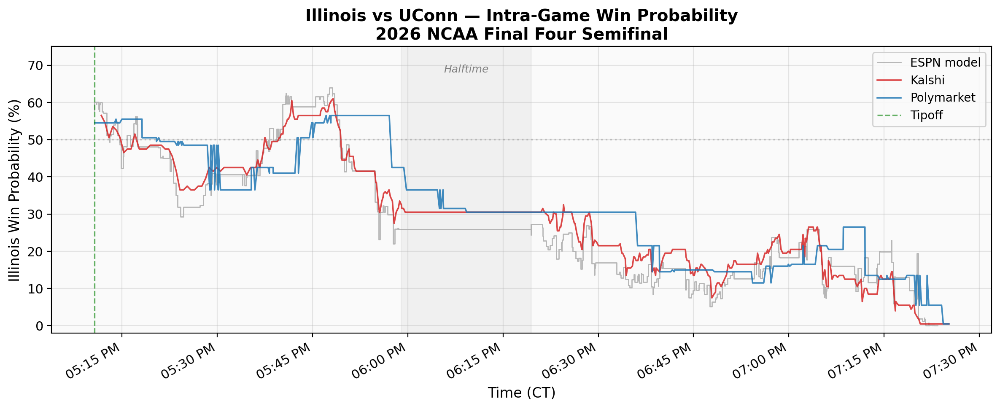
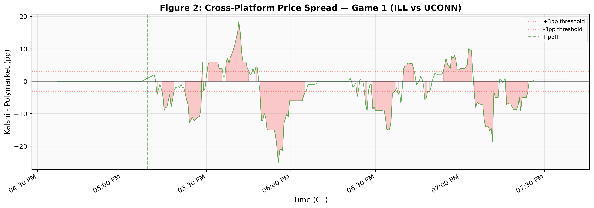
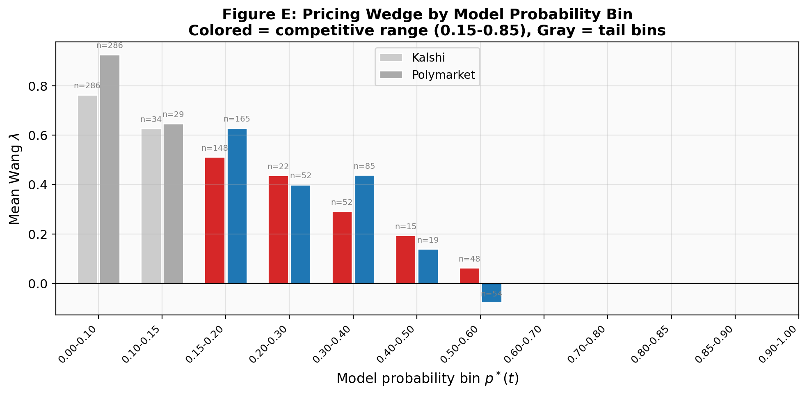

Last night I was at UIUC watching Illinois play UConn in the Final Four with a few thousand other students. While we watched the game, a script on my laptop was quietly polling the Kalshi and Polymarket APIs every 15–30 seconds in the background.
The goal: test whether the pricing wedge I estimated in my main paper — across 291,309 contracts — actually exists in real time, tick by tick, during a single game's two-hour lifecycle.
Short answer: it does. And the magnitude matches.
The Data
My collector ran from 3:51 PM to 7:38 PM CT on April 4, covering the full Illinois–UConn semifinal. It captured 657 Kalshi and 857 Polymarket observations on the game-winner contract, plus ESPN's play-by-play (439 plays, 74 scoring events) for a score-based benchmark.
The Price Trajectory
Both platforms opened Illinois at roughly 55%, consistent with sportsbook consensus. Illinois held a narrow 22–21 lead midway through the first half, but never led again after the 5:02 mark. UConn's second-half surge — building a lead of up to 14 points — drove Illinois below 5% by 7:16 PM.

That cross-platform spread is itself interesting. Kalshi's $0.01 minimum tick constrains price resolution at the extremes, and the two user bases clearly process game information at different speeds. Sustained spreads of 10–15 percentage points during active play suggest cross-platform arbitrage in live sports markets remains limited, even for a game this high-profile.

The Pricing Wedge Test
My main paper estimates that prediction markets systematically overprice contracts by about $\lambda = 0.183$ — roughly speaking, an event with a 10% true probability trades around 13.5%. But that estimate comes from averaging across hundreds of thousands of contracts. Does this overpricing exist in real time, during a single game?
To test this, I built a simple score-based win probability model (it correlates at $r = 0.982$ with ESPN's proprietary model) and computed the Wang $\lambda$ at every market tick. The naive answer looked dramatic: $\lambda = +0.57$, three times the cross-sectional estimate.
That number is wrong. Here's why.
Once UConn led by 14 points, the score model assigned Illinois a 2–3% chance of winning, while the market still priced them at 5–8% (Kalshi can't price below $0.01). The math I use to compute $\lambda$ — the probit transform $\Phi^{-1}$ — has a slope that goes to infinity near 0 and 1. So a modest 3-percentage-point gap in the tail gets amplified into a massive $\lambda$. The “finding” was an artifact.

Filter to the competitive range — the period when the game was genuinely uncertain ($p^* \in [0.35, 0.55]$, roughly the first 30 game-minutes) — and the real number emerges: $\lambda \approx +0.13$ on both platforms. That's within one standard error of the cross-sectional estimate of 0.183 from the main paper.
The pricing wedge is not a cross-sectional artifact. It is embedded in real-time market prices at the tick level. At competitive probabilities, the intra-game $\lambda$ of +0.13 matches the estimate from 291,309 contracts.
Kalshi vs Polymarket
Against ESPN's own in-game model (a sharper benchmark than my score model), Kalshi showed essentially zero pricing error — $\lambda = +0.01$, not statistically significant ($p = 0.06$). Polymarket left a small but significant residual: $\lambda = +0.08$ ($p < 0.001$).
The interpretation is straightforward. Kalshi's regulated market, populated by U.S. participants, priced this game as accurately as ESPN's proprietary model. Polymarket's crypto-native user base — different demographics, different information sources — left money on the table. For this game, at least, the regulated platform was the sharper market.
What This Means
This is a single game. I can't draw sweeping conclusions from $N = 1$. But the fact that the real-time pricing wedge matches the cross-sectional estimate from 291,309 contracts is reassuring: the framework isn't just a statistical artifact of averaging. The pricing wedge is baked into every tick.
The methodological lesson matters too. Anyone applying the Wang Transform to live sports data needs to filter extreme probabilities. The probit transform inflates $\lambda$ by a factor of four or more in the tails. Report the competitive-range estimate, not the full-sample number.
Monday night, UConn plays for the national championship. The collector is running.
Read the full framework
Cross-platform validation, time-decay analysis, and the complete pricing theory — across 291,309 contracts on six platforms.